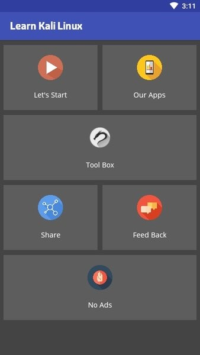
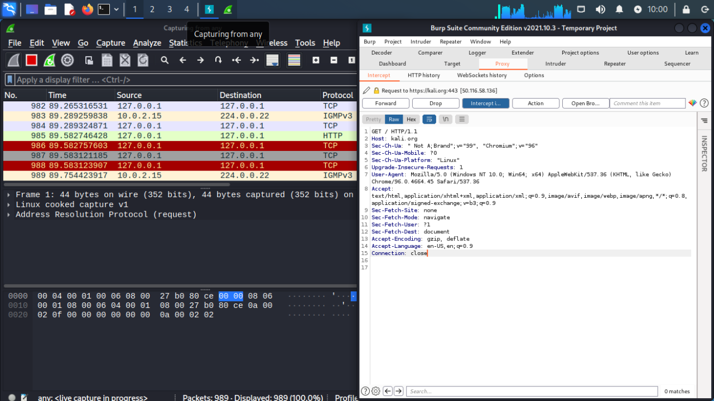

Kali Linux 踩过的六个深坑，每个都差点让我重装系统
从无线网卡到 Metasploit，从 NetHunter 到 WSL，Kali Linux 的工具链看着开箱即用，背后藏着一堆硬件兼容、服务依赖和环境路径的陷阱。本文把我踩过的最痛的六个坑逐个拆开。
开头：以为装上就能跑全套，结果卡了三天
当初我是冲着"一键搞定渗透测试"来的——600 多款工具预装、定制内核、无线支持，官网把 Kali Linux 吹得像是插上电源就能开始审计。现实是：我从 ISO 写到 U 盘那一刻起，到真正跑通第一条 airodump-ng 扫描命令，中间卡了整整三天。
不是我菜，是 Kali 的坑藏得太巧。每个坑单独看都是"小问题"，但连起来能把新手的耐心磨到零。下面这六个是我印象最深的，每个都有症状、有原因、有解法。

坑一：airmon-ng start 之后，网卡直接消失
症状：敲完 airmon-ng start wlan0，终端里报了一句 "monitor mode enabled on wlan0mon"，然后再敲 iwconfig——wlan0 和 wlan0mon 都不见了，只剩下一张 lo。重启网络管理器也没用，甚至 reboot 之后网卡名还在但就是扫不到任何 Wi-Fi 信号。
原因：Kali 默认的 NetworkManager 服务会在 monitor 模式切换过程中自动接管无线网卡，把 airmon-ng 创建的虚拟接口给"收编"回去了。这个问题只在某些内核版本和特定芯片上出现，所以kali linux文档只在 FAQ 最底部提了一句，很容易漏看。
解法：跑 airmon-ng 之前先干掉所有会抢网卡的进程：
airmon-ng check kill这条命令会自动 stop NetworkManager、wpa_supplicant 等服务。跑完再 airmon-ng start wlan0，网卡就老老实实留在 monitor 模式了。用完之后记得 airmon-ng stop wlan0mon，然后 service NetworkManager start 恢复日常上网，不然后面没法搜漏洞数据库。
坑二：airodump-ng 一片空白，连自己家的 AP 都扫不到
症状：monitor 模式看起来开成功了，iwconfig 也显示 Mode: Monitor，但是敲 airodump-ng wlan0mon 之后屏幕上只有一个空表格，等了五分钟一个 BSSID 都没有。
原因：九成概率是硬件不支持。笔记本自带的无线网卡，十张里有八张的芯片组不支持 monitor mode 或 packet injection——Kali 的定制内核虽然打了补丁，但补丁只对 RTL8812AU、AR9271、RTL8187L 这些特定芯片有效。我那台联想拯救者用的是 Intel AX210，就是被补丁列表漏掉的那一批。
解法：老老实实买一张外接 USB 网卡。Alfa AWUS036ACH（RTL8812AU 芯片）是圈内公认的入门款，插上就能用，不用折腾驱动。还有一成概率是你在虚拟机里跑 Kali——虚拟网卡直通物理网卡这件事，VMware 和 VirtualBox 在不同内核版本上表现完全不一样，我后来干脆改成物理机安装，省了无数调试时间。
坑三：aireplay-ng 报 injection failed，握手包永远抓不到
症状：扫到了目标 AP，锁定了频道，aireplay-ng 也发出去认证包了，但是目标 AP 纹丝不动，没有任何客户端掉线重连。a irodump-ng 右上角的 Handshake 区域始终空着。
原因：还是硬件。injection（数据包注入）是比 monitor mode 更苛刻的硬件能力，有些网卡能 monitor 但不能注入，比如早期的 RTL8723 系列。还有一种可能是目标 AP 开了 WPA3 或者 PMF（Protected Management Frames），强制客户端下线的 deauthentication 包会被 AP 直接丢弃。
解法：先跑 aireplay-ng -9 wlan0mon 做注入测试——如果看到 "Injection is working!" 那就是 AP 端的问题，得换目标或者等 WPS 漏洞；如果测试就失败，那赶紧换网卡，别在这上面耗时间。另外可以用 reaver 工具走 WPS 攻击路径绕过握手包捕获，前提是目标路由器没禁用 WPS。
坑四：Metasploit 启动报数据库连接失败
症状：敲 msfconsole 能进去，但跑 db_status 显示 "Database not connected"，搜索历史和自动记录的功能全不可用。新手可能觉得无所谓，但实际跑渗透任务时，没了数据库跟踪每个目标的扫描结果，多目标场景下很快就乱了。
原因：Kali 2024 之后把 PostgreSQL 的初始化从"首次启动自动完成"改成了"需要手动执行"——这是为了节省 Live 模式的内存占用，但官方没把这个改动放在显眼位置。很多人以为装完 Kali 数据库就好了，其实根本没初始化。
解法：三条命令搞定，顺序不能反：
sudo systemctl start postgresql
sudo msfdb init
msfconsole进 msfconsole 之后再敲 db_status，应该能看到 [*] Connected to msf. Connection type: postgresql. 这行提示。顺便提一句，每次开机 postgresql 服务默认不会自启，嫌麻烦的可以 sudo systemctl enable postgresql 设成开机自动。
坑五：NetHunter 装在安卓上，很多工具跑不动
症状：安卓机型装完 NetHunter，打开终端发现 aircrack-ng、reaver 这些无线工具全部执行失败，报 "Operation not permitted" 或者直接段错误。Metasploit 能跑但 payload 发出去收不到回连。
原因：NetHunter 依赖内核级权限，必须刷入第三方内核（通常是 Kali 官方编译的自定义内核）。用 Magisk root 而不刷内核的话，安卓的 SELinux 和内核模块会把无线注入等操作全部拦截。另外，高通芯片的安卓机比联发科的兼容性好很多，我之前用一台联发科机型，刷了内核也跑不起来 monitor mode。
解法：先去 NetHunter 官网的设备支持列表查你的机型——在列表里的按教程刷内核，安装所需镜像从官方下载拿；不在列表里的，要么换设备要么放弃无线测试，只当普通命令行工具用。Metasploit 收不到回连大概率是安卓防火墙没开端口转发，iptables -I INPUT -p tcp --dport 4444 -j ACCEPT 先放行监听端口再说。

坑六：WSL 里跑 Kali，网络永远对不上
症状：WSL2 装了 Kali，工具链齐全，但是 nmap 扫不到 Windows 主机的局域网设备，Metasploit 的 LHOST 设了内网 IP，反向 shell 就是回不来。更离谱的是有时候 WSL 的 IP 每次重启都变，连 SSH 进去都费劲。
原因：WSL2 用的是虚拟网卡 + NAT 的网络模型，WSL 实例和 Windows 主机不在同一个二层网络里。nmap 192.168.1.0/24 能扫到的只有 WSL 自己的虚拟网段，外面的真实局域网设备根本看不见。2024 年底 WSL 加了 Mirror Network 模式，但默认还是 NAT。
解法：在 %USERPROFILE%\.wslconfig 里加一行 networkingMode=mirrored，启用镜像网络模式。这样 WSL 和 Windows 共享同一套网络栈，nmap 能扫到真实局域网，反向 shell 的 LHOST 也能直接写 Windows 的内网 IP。代价是 WSL 的网络性能会略有下降，但对安全测试场景来说这个牺牲完全可以接受。
防坑清单（3 秒速查）
- 无线测试前先
iw list确认网卡支持 monitor + injection，不行就外接 Alfa - airmon-ng 之前一定
airmon-ng check kill，用完记得恢复 NetworkManager - Metasploit 数据库必须手动 init，开机记得 start postgresql
- NetHunter 先查设备支持列表，联发科机型慎刷
- WSL 跑 Kali 记得开 Mirror Network 模式，不然 nmap 等于瞎子摸象
这份 Kali Linux 的踩坑笔记和配套的工具脚本，我在三个地方做了备份：GitHub 上有完整版本，国内网络优先看 Gitee，GitCode 也同步了一份方便不同场景查阅。